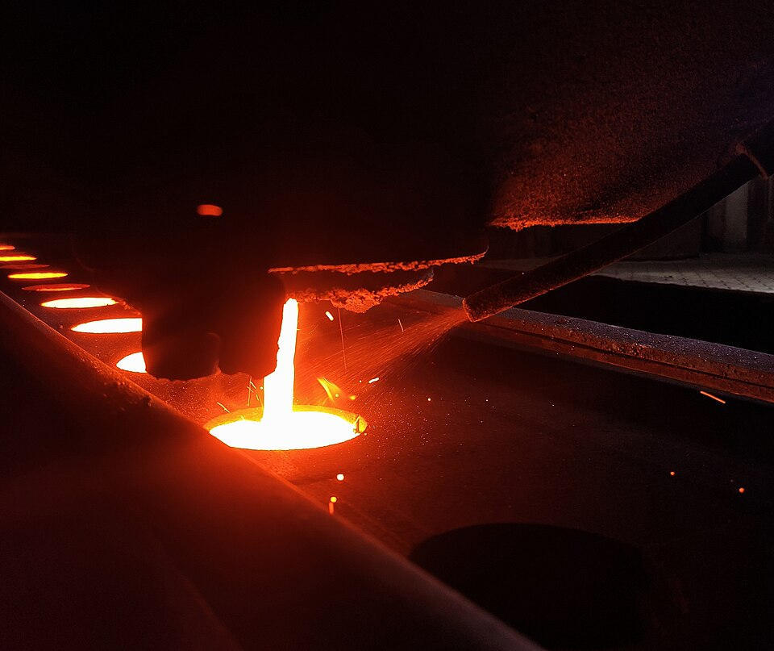
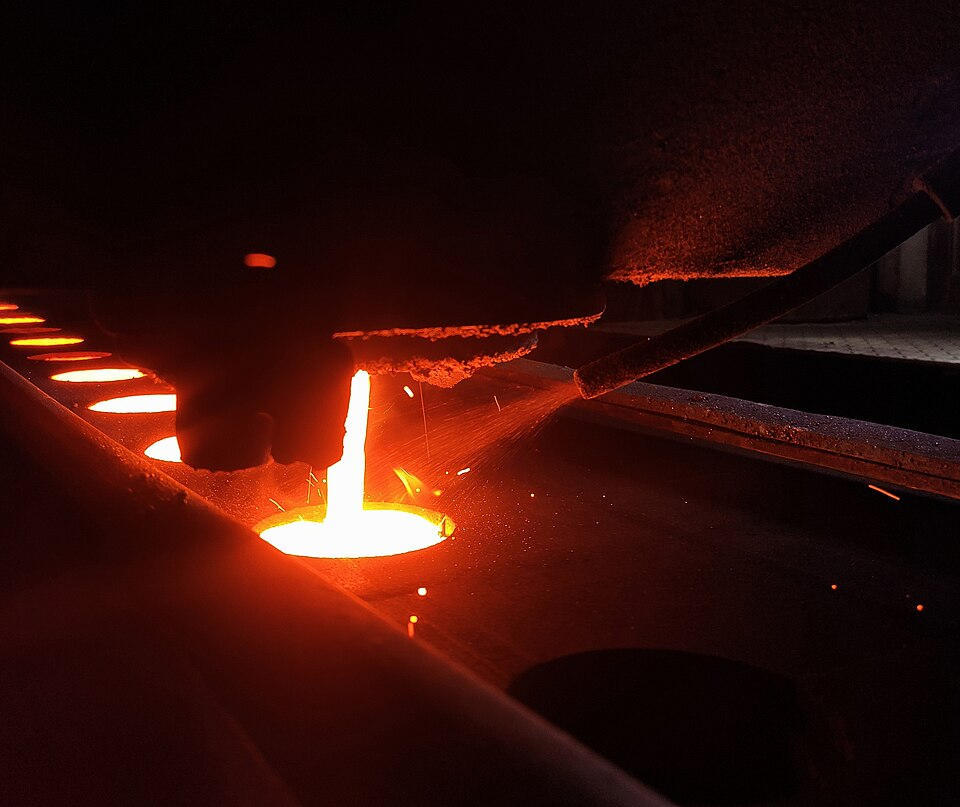

How steel and cast iron are produced from ore?
Raw materials:
Iron ore, coke(purified coal) and flux such as Calcium carbonate to remove impurities in the form of molten slag.
Blast furnace
A blast furnace is a type of metallurgical furnace used for smelting to produce industrial metals in this
case pig iron, which is an intermediate material for producing cast iorn and steel
Blast furnace is vertical. From the top ore, coke and flux are constantly added while on the bottom the
air is blown with tuyeres. The coke burns, flux melts and many chemical reactions occur.
2C + O₂ => 2CO - coke burns
Fe₂O₃ + 3CO => 2Fe + 3CO₂ - is the main reaction producing iron.
CaCO₃(s) → CaO(s) + CO₂(g) - flux splits
 

Recommended video
Veritasium published an amazing video about iron and carbon